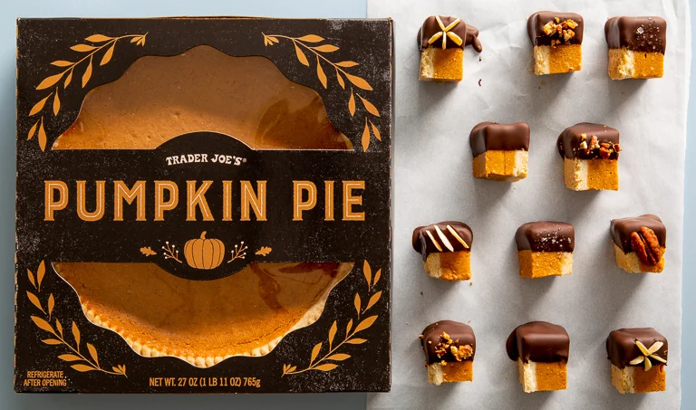

Chocolate Dipped Pumpkin Pie Bites

Description
Love pumpkin pie? Crave chocolate? This quick and easy treat from Trader Joe's should satisfy all your cravings!
Make a wonderful presentation by half-dipping the pie bites (as seen in the image above), or customize them with your favorite crunchy garnish. I personally prefer to sprinkle some crushed Werther's Original caramel hard candies as a magical burst of flavor!
Ingredients
- ½ bar Trader Joe's Pound Plus chocolate (semi-sweet or dark)
- 1 whole Trader Joe's Pumpkin Pie
-
Crunchy garnish of choice (optional)
Examples:
- Sea salt
- Sliced almonds
- Sunflower seeds
- Crushed Werther's Caramels (my fav!)
Steps
- Place Trader Joe's Pumpkin Pie in freezer for 1 hour. This helps with making cleanly cut pie bites.
- Line a baking sheet with parchment paper and set aside.
- Melt chocolate in microwave, stirring in between until smooth.
- Remove pie from freezer and use sharp knife to slice pie into 1 inch cubes.
- Place bites on fork 1 by 1 and dip into melted chocolate. If fully covering, use spoon to pour more chocolate over the bite. Allow excess chocolate to drop before placing onto parchment.
- (Optional) Garnish bites with crunchy toppings
- Serve once hardened - bone apple teeth!